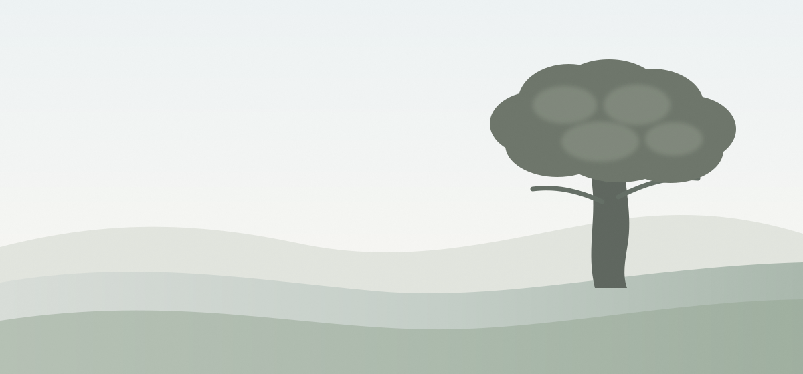

دستور عائلة الأسرج
إطار واضح يحافظ على وحدتنا، ينظم إدارة أصولنا وشركاتنا، ويخلي المؤسسة تكبر وتستمر من غير ما تعتمد على شخص أو جيل واحد.

مؤسسة الأسرج في صورة واحدة
كل جزء مربوط بالتاني. اضغط على أي باب من الفهرس عشان تدخل في التفاصيل.
أبواب الدستور
١٤ باب بيغطوا كل ما يهم العيلة والمؤسسة.
الهدف والاستمرار
ليه المؤسسة موجودة؟ وإيه اللي لازم يفضل ثابت بعدنا؟
شكل المؤسسة والشركات
إزاي ننظم الشركات والأصول من غير ما نخلط المخاطر؟
الملكية وأنواع الأسهم
مين يملك القيمة؟ مين ياخد أرباح؟ ومين له حق القرار؟
مين يقرر وإيه اللي لازم يتحمى
إيه القرارات العادية وإيه القرارات اللي محتاجة حماية أقوى؟
الأرباح واستخدام الفلوس
نوزع قد إيه؟ نعيد استثمار قد إيه؟ ونحتفظ بسيولة قد إيه؟
الاستثمار والديون والمخاطر
نكبر إزاي من غير ما نحط المؤسسة كلها في خطر؟
إدارة شؤون العيلة
إزاي العيلة تتكلم وتتفق بنظام من غير ما تدخل في الإدارة اليومية؟
مجلس الإدارة وإدارة الشغل
مين يوجّه ويراقب؟ ومين يدير الشغل يوم بيوم؟
شغل أفراد العيلة
إمتى فرد من العيلة يشتغل؟ وعلى أي أساس يتقيّم ويترقى؟
مين يكمل القيادة بعد المؤسس
إزاي الملكية والسيطرة والقيادة تنتقل من غير فوضى؟
الوفاة والعجز والميراث
إيه اللي يحصل لو شخص أساسي مات أو فقد القدرة فجأة؟
الزواج والطلاق وحدود العيلة
إزاي نحمي استمرارية الملكية من غير ما نظلم الأسرة؟
البيع والسيولة والتقييم
لو حد عايز يخرج، ياخد حقه إزاي من غير ما نكسر المؤسسة؟
القانون والضرائب وتغيير القواعد
إزاي نحول كل ده لنظام قانوني ونعرف نعدله بعدين؟
النسخة الكاملة للقراءة المعمقة
ابدأ من الباب الأول واتنقل بين الأبواب بالتفصيل.
فتح النسخة الكاملة ←